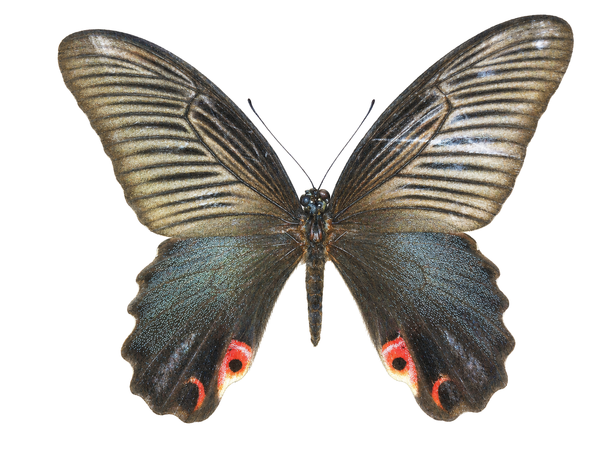

アゲハチョウ科 · 006 / 165
クロアゲハ
Papilio protenor

特徴・見分け方
黒い翅と尾状突起を持つ。雌は後翅の赤い斑紋が発達しやすい。
雌雄の違い
雌では後翅の赤斑が発達する傾向。沖縄産は雄でも赤斑が目立つ場合があり、赤斑だけで判定しない。
大きさ
前翅長 45–70 mm（一般的な目安。沖縄個体群だけの実測範囲ではない）
沖縄の島別記録
伊平屋島、瀬底島、古宇利島、奥武島（名護市）、沖縄本島、久高島、渡嘉敷島、座間味島、阿嘉島、慶留間島、久米島、奥武島（久米島町）、オーハ島、宮古島、石垣島、竹富島、小浜島、黒島、鳩間島、西表島、波照間島、与那国島。 記録島のすべてで同じ頻度とは限らない。
生息環境
やや暗い森林の縁、谷沿い、ミカン類のある場所。
生態・識別上の補足
尾がないのが普通のナガサキアゲハや、白斑が目立つモンキアゲハと比較すると分かりやすい。
幼虫・食草
サルカケミカン、シークヮーサー、ハマセンダンなどミカン科。
参照元・参考資料
- 沖縄蝶類生態図鑑：クロアゲハ
資料内の参照日: 2026-11-10 - 形態・大きさの補足資料
資料内の参照日: 2026-11-10
掲載内容は提供データ（2026年11月10日更新）に基づきます。記録島は現在の定着や観察の容易さを保証しません。イラストは参考表現で、同定には実物の形態と参照資料を併せて確認してください。